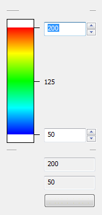
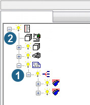

NC-Jobs tab
To create a new NC job:
-
Select → on the menu bar or right-click in the browser.
-
Select New NC-Job.
A new NC job entry appears in the browser along with a list of all associated elements (tree structure).
Icons in the hyperVIEW browser
|
|
NC-Job (postprocessor run has not yet been carried out) |
|
|
|
NC Job (postprocessor run has been carried out and an NC file has been generated) |
|
|
Machine |
|
|
Part (model, result, residual stock) is defined |
|
|
Part (model, result, residual stock) is not defined |
|
|
|
Stock is defined. |
|
|
|
Stock is not defined. Insert a cuboid or cylindrical stock via the shortcut menu (right-click). See the information in section |
|
|
|
Clamping devices |
|
|
|
Toolpaths |
|
 |
Frame system |
|
|
Element is visible |
|
|
|
Toolpaths in highlight mode |
|
|
Element is not visible |


Drag&Drop
You can copy and move the stock, model, result and toolpath entries of an NC job using drag-and-drop operations.
Warning
The result of one NC job cannot be used as the result of another NC job.
To move an entry, select the entry and drag it the required position in the hyperVIEW browser while holding down the mouse button.
To copy an entry, select the entry and drag it the required position in the hyperVIEW browser while holding down the CTRL key.
The standard Copy and Paste commands apply to all of the entries.
To edit the NC job that has been created, select the NC job and choose the NC-File Properties function on the shortcut menu.
To edit a machine assigned to the NC job, select the machine and choose the Machine properties function on the shortcut menu.
hyperVIEW usually creates one NC job for each joblist received from hyperMILL. To combine toolpaths from different job lists into one NC file, use the Combine all function.
Machine administration
Use Machine administration to create new machines or edit existing machines.
|
Open the Machine administration dialog. |
|
|
New: Create a new machine. |
|
|
Edit: Edit a machine. Specify the parameters of your choice in the Machine Definition dialog. |
|
|
Delete: Delete the selected machine. |
|
|
Copy: Copy the selected machine. |
|
|
|
Import: Import a defined machine (load a machine definitions file in |
|
|
Default: Define the selected machine as a default for when a new NC job is created. |


Select the machine by entering characters
In the Machine administration dialog, select a machine below the currently selected machine by entering the name of the required machine. In case of ‘rapid’ input, the character string is evaluated in context.
Stock
Use the shortcut menu of the Stock entry to assign a stock model to the NC job by defining it as a cube/cylinder or importing it as a mesh in *.STL or *.VIS format. If you open the program from hyperMILL, a stockmodel can also be
transferred. The stock is used for the following purposes displaying the simulation, and calculating the results.
Machining sequence
To use the calculated stockmodel as a basis for the stockmodel of the subsequent NC job, copy the stockmodel to the stockmodel of the NC job using a drag-and-drop operation. Insert a stockmodel using the shortcut menu Insert cube / Insert cylinder / Insert mesh. Specify the required stock parameters in the Cubical stock model or Cylindrical stock model dialog.
Dimensions
X, Y, Zmin /Zmax: The minimum and maximum dimensions of the cube are proposed by the program and can be changed as required.
Appearance
Select the view options of your choice.
Center of bottom
X, Y, Z: A center value is proposed by the program. You can change this as required.
Boundary Offset
Diameter, Height: Use the values or enter your own.
Direction: Select the orientation of the stockmodel along the X, Y or Z axis.
Appearance
Select the view options of your choice.
If one or more toolpaths have already been assigned to the NC job, the measurements of the stock are automatically adapted to the existing toolpaths. If a stock (cuboid/cylinder) has already been defined in the CAM application, this is proposed for the simulation. Modify the dimensions so that they match the toolpath to be simulated.
The stockmodel can be made visible or invisible, or displayed in shaded, transparent or wireframe mode. The Properties shortcut menu of a defined stockmodel allows you to display additional properties (Number of elements) and edit others (Visibility, Color, Mode).
Model
Use the Insert part shortcut menu to assign a model in *.3DF, *.STL or *.VIS format to the NC job. You can also transfer a model by opening the program from hyperMILL.
Result
Use the Calculate shortcut menu to calculate the resulting stock. Prerequisite: Stock and toolpaths have been assigned. The calculated stock is displayed under Result in the graphics window.
Fixtures
Use the Insert Fixtures shortcut menu to insert a fixture in the *.3DF, *.STL or *.OMX formats.
Toolpaths
Using the shortcut menu of the Toolpaths entry, you can assign toolpaths to an NC job and check and change the properties of toolpaths. To insert a toolpath, use the Insert toolpaths shortcut menu and open the Insert toolpath file dialog:
File selection
Set filter ( *.pof, and so on).
|
|
Set the drive and directory or enter the path manually and click the arrow to apply. |
|
|
|
Select the path from your favorites. |
|
|
Click the Insert button to copy the set path into your favorites list. Accept files. Select the required files in the top list displayed. |
|
|
Files are copied to the lower selection list by clicking the arrow with the left mouse button or by double-clicking the file name. Import files with OK. |
|
|
|
Remove selected entries / all entries from selection list. |
|
|
|
Move selected entry upwards / downwards. |

To improve clarity when several toolpaths are displayed in the graphics window, the toolpaths can be displayed in highlight mode and/or in different colors.
The Tools... shortcut menu of the Toolpaths entry provides a list of the tools used in the NC job.
If the tool does not have a unique NC number, for example, if several tools with different geometries use the same NC number, the respective tools are highlighted in red.
Various tool parameters are displayed in the list display in the dialog. Some of these parameters (Accuracy, 5X comp. length) can also be edited directly. Select the desired entry in the list, right-click, and select Edit.
Double-clicking an entry in the list opens a Tool dialog box. This dialog box displays an overview of all the tool's geometry and technology parameters. The most important technology parameters can also be edited.
When you are done, click Close or Exit.
As well as various tool parameters, the list also displays the colors defined under → for the tools/toolpaths. If no default behavior has been defined on the Options menu, you can assign the defined colors either to the toolpaths or the tools here.
Click the Reset button to use the default color for all the tools. In addition to the colors defined under → , you can also define new colors for individual tools/toolpaths here.
The Coordinate systems shortcut menu lists all the coordinate systems of the current NC job including origin and reference system.
Note
The report file that is generated only contains information on the selected NC job and the selected toolpath. The printout lists information on all of the NC jobs contained in the browser.
In addition, you can list individual statistics for each toolpath, such as: length of movement in G0, G1, G2/G3, dwell times and the number of tool changes.
Feedrate Analysis
The feedrate values of the calculated toolpaths are displayed using different colors. This allows for an easier and faster check of the toolpaths and the feedrates selected or calculated. Particularly during High Performance roughing, the realized feedrate adjustment can be checked and reproduced easily.
|

|
Displayed range: Change the largest or smallest feedrate displayed manually or with the arrow keys. The colors used for each feedrate area are displayed in the color scale. Toolpaths with only one feedrate value are shown in red. Feedrates outside the displayed range are shown in white. Select Reset to restore the original values. → : Largest and smallest feedrate in the toolpath. |
Warning
In 2D Contour Milling, only the center path is displayed.
The Properties shortcut menu displays the following parameters for editing: the most important technology parameters: Feedrate, Infeed, Spindle speed.
The toolpaths can be displayed in an external editor as follows: In the Properties dialog, right-click the respective entry next to Source file and choose Show toolpath.
|
Write an NC file. Select storage location. |

The following parameters are displayed on the Properties shortcut menu but they cannot be edited: dimensions, internal number (relating to the current NC job), cycle description (including creation date) and display settings for the graphics window (visibility...).
Appearance
Visible: Select this option to display the toolpath that has been inserted in the graphics window.
Show 5 axis tool vectors: Select to display the 5-axis vectors for 5-axis toolpaths.
Display truncated toolpath: Toolpaths that have been cut off and that led to a holder collision (stored in the toolpaths) are displayed in the simulation.
Show NC path: This option is not available unless the toolpath has been created with a cycle that contains the Path compensation option (2D Contour Milling, 2D Contour Milling on 3D Model and turning cycles). The difference between the corrected and the simulated toolpaths is shown.
Double-clicking the color fields also allows the respective colors to be defined for G0 and G1 as well as for NC paths (G0 / G1) and local points.
|
|
Use the Point properties function on the Measure toolbar to display local points in the graphics window. |
|
|
Generate a list of the cycle parameters set. |
|
|
|
Open the toolpath of a job in an external editor. |

NC text: Enter user-defined text blocks such as control instructions or other similar parameters in the NC text dialog.
Insertion position / NC text
Select the corresponding position where the NC text is to be inserted. There are no limitations to the text length or the characters used (including symbols).
Copy: Copy the NC text defined to the clipboard.
Load: Open any text file. The content of the file is displayed in the NC text area.
As hyperVIEW does not perform any syntax or collision checks on the entered data, you should only use this function if you are certain the used machine can interpret the data correctly.
Simulation of compound jobs
A compound job is shown as an entry in the hyperVIEW browser (1). The following functions are available on the shortcut menu of the compound job:
Insert toolpaths: Load a toolpath file and add the job to the compound job.
Simulation: Simulate all the jobs of the compound job.
Tools: Show all the tools of the job list.
Statistics: Show the statistical data of all the jobs in the compound job.
All other functions in the shortcut menu correspond to the shortcut menu for an individual job. For more information on this, please see the previous section.
The following functions are available on the shortcut menu of the Machine properties entry (2):
→ : Select this option if a separate NC file is to be generated for each job.
Compound job as single job: Select this option to write all the jobs in a compound job to a single NC file. This function can only be enabled if the One NC-file per job function is also enabled. The name of the compound job is used for the <JOB> placeholder in the NC file.
|  |